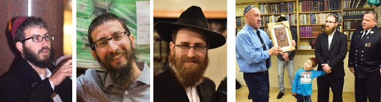

Survivors of the inferno
Fifteen years have passed since the fire that suddenly started at four in the morning. While the flames burned the wooden house, nobody knew that trapped on the second floor were three bachurim who had returned from a farbrengen, and who were unable to escape. * Beis Moshiach spoke with the three Friedman brothers who were miraculously saved that night and heard about their moving encounter with the fireman who saved them .

“Odeh Hashem b’chol leivav, b’sod yesharim v’edah” – I shall thank the Lord with all my heart, with the counsel of the upright and [in] the congregation. This is the fifteenth time in a row that Rabbi Yehuda Shlomo Friedman began his traditional farbrengen with these words. The farbrengen is held in his home to mark the miracle that took place that night, 26 Shvat 5762, when his three sons were rescued from a fire. He adds, “This is the day Hashem made, let us rejoice and be happy on it.”
Every year, the Friedman family gathers together with friends to give thanks to Hashem for the miracle of that night.
CONFLAGRATION
Thursday night, 26 Shvat, 5762.
Thirty years ago, Rabbi Yehuda Shlomo Friedman and his wife Yehudis (nee Swerdlov) went on shlichus to Mill Basin, a neighborhood in Brooklyn, about a half hour’s drive from Crown Heights.
On that Thursday night, the 15, 16, and 17-year-old Friedman brothers, who learned in Oholei Torah, stayed on for the weekly, Thursday night farbrengen. It went late into the night which meant they couldn’t go home. They decided to spend the remaining hours of the night at their grandparents’ home, the Swerdlovs, who live on Crown, the corner of Kingston, in the heart of Crown Heights.
Due to the late hour, they entered their grandparents’ house quietly so as not to waken them. They went quietly up the steps to the second floor where they went to bed. They knew that at seven o’clock they had to show up for Chassidus at yeshiva.
At four in the morning, shortly after they arrived at the house, a fire broke out downstairs. Their grandfather, R’ Leibel, woke up immediately, hearing the noise, and he jumped up and discovered the flames that were still small. He ran outside and quickly called the fire department.
The fire grew bigger and flames began to lick the wooden house. They reached the steps that led upstairs, to the bedrooms where the three brothers slept. When they woke up to screams, smoke and the smell of fire, the steps were already engulfed in flames. They could see that their path was blocked and they could not go downstairs.
Sirens could be heard, piercing the stillness of the night. Soon they heard the voices of the firemen gathering outside and setting up their gear.
As the grandsons stood upstairs, checking out the possibilities, they heard the voice of their grandfather telling the firemen they don’t have to go up because nobody was there.
That is when the brothers realized they had better find a way out by themselves, because they would not be getting professional help. Instinctively, each of them tried saving his life in a different way. Shmulik tried finding a window that wasn’t barred. Mendel ran to the bathroom and hid in a closed closet in the hopes that the smoke wouldn’t reach there so quickly. Zalman stood at the top of the stairs and tried to scream for help, but every time he tried, he was choked by the smoke that had spread throughout the house.
Despite the grandfather being sure nobody was upstairs, the fire chief, Joseph Scaramuzzino, insisted on going upstairs to check whether anyone was up there. This was thanks to the law that states it is prohibited to start firefighting measures before entering and ascertaining that there are no people inside.
So Joseph and Ralph Tufano went upstairs where they found Zalman unconscious. They quickly realized there might be more people in the house.
There are no words to describe the grandfather’s shock and fright when he found out the danger his three grandsons were in.
At a later point, Joseph said the fire on the stairs was so big that “I did not really believe we would be able to get the three of them out, though I did not hesitate for a minute but wrapped Zalman in my coat that is fire retardant, and took a dive down the stairs. We both ‘sailed’ down all the stairs and fell straight down to the burning floor where my fellow firemen were waiting. They helped me take him outside to the fresh air and helped him come to.”
Meanwhile, Ralph made his way up the stairs and quickly found Shmulik who was still waiting in an inner room. He did the same procedure to get him out. Shmulik, who was still able to talk, told Ralph that Mendel was also on that floor.
In the meantime, Mendel felt that the closet wasn’t helping him and that the smoke was beginning to fill the room he was in. He tried in every way possible to continue breathing, despite the difficulty in doing so.
Mendel, today a shliach in Florida, remembers those moments of terror:
“At first I thought they would extinguish the fire downstairs and then we could go down. I tried to find a place where I could stay, away from the smoke, but after a few minutes I saw that the fire was growing stronger. It had already reached the second floor. I felt it was the end. The fire was there. There were no windows. How would they get to me? The fact that they didn’t know I was there added to the terror.
“And then, like an angel from heaven, I felt drops of water. The firemen did not come in with a powerful hose to put out the blaze, but with a small hose that sprayed water without any strong pressure. Because of the thick smoke I was unable to see the person behind the clouds of smoke, under the helmet. Afterward, I found out it was Ralph who endangered himself once again and came back for me. The stairs were gone and there was no way to get down. Everything was on fire. Ralph picked me up, covered me as best as he could, and then jumped straight down into the fire where the rest of the team was waiting for us. They took us out immediately.”
In the midst of this whole inferno, the Swerdlov’s son Avremi, who is deaf since birth, was sound asleep. He was also saved by firemen who came through the window.
YIDDISHE MAMA
In the middle of the night, the boys’ parents were asleep in their home in Canarsie. Suddenly, their mother woke up and said she smelled smoke. She woke up her husband who went to check if there was a fire.
Their phone rang and they were informed of the huge fire at her parents’ house and about how her three sons were rescued.
Said her husband, “That’s the concern of a Yiddishe mama, who gets up in the middle of the night and smells, from a distance of a half-hour drive away, that her children are trapped in a house on fire.”
DOUBLE RESCUE
Last year, about a week before the anniversary of the fire, one of Zalman Friedman’s friends met the fireman, Joseph Scaramuzzino, and got to talking to him. When the friend said he lives in Crown Heights, Joseph said that he knew someone from there. He remembered saving a 17-year-old from a house on fire, fourteen years before. Slowly, the pieces of the puzzle came together and they realized they have a mutual friend, Zalman Friedman. After a number of phone conversations, they arranged a meeting between the rescuer and the rescued. It was an opportunity for Zalman to invite Joseph to the annual thanksgiving celebration they were soon going to have.
Joseph was thrilled by the invitation and brought along Ralph who also had a significant part to play in the rescue operation of that night.
“When I first met with the person who saved my life, Joseph,” said Zalman, “of course I did not stop thanking him and praising him for his bravery that night. He is the one who saved my life; he is the one sent by Hashem to save us all.”
Joseph was very emotional throughout their encounter. He said to Zalman, “You are the one who saved my life!”
At the thanksgiving meal that took place at the Chabad House in Mill Basin, after telling the story of the rescue in all its details, Joseph went on to say something they didn’t know.
“This happened half a year after the tragedy of 9/11 where I lost two nephews and a cousin in addition to good friends. It hit me very hard and I did not get over it. Every day I got up with the feeling of ‘why?’ Every day I asked G-d, ‘Why did you leave me here? You took my relatives away, you took my friends, why did you leave me? What is my purpose in the world?’
“That night, I understood. I understand exactly what my purpose is. I understood why G-d created me and I understood why He left me here after taking away those dear to me. That day, after rescuing the three brothers, I understood my life’s purpose.”
“Zalman as of today is a good friend, a brother. He is a true rabbi. After hearing him speak so well in a speech that included ideas from the Torah, and seeing his four children, all smiley, I know that this is my sign from Above. It provides closure for me. It took 14 years but the message arrived; this is why I was created.”
Beis Moshiach (staff). "Survivors of the inferno." Beis Moshiach, no. 1062 (March 22, 2017).